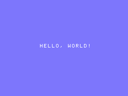
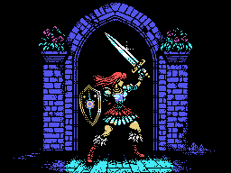
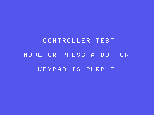
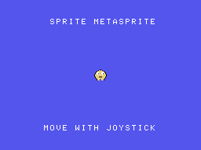

COLECOVISION TOOLCHAIN DASHBOARD · SEPTEMBER 2026
Different tools, different priorities.
Amy Studio, CVBasic, z88dk, ugBASIC, devkitSMS, PVColLib, and NewColeco can all create ColecoVision software. This dashboard compares evidence, not promises.
The tests use each tool’s strongest validated native settings. Occupied size excludes cartridge padding. Smaller does not automatically mean faster or better.
REPRODUCIBLE EVIDENCE
Four samples, seven solutions.
| Occupied ROM bytes | Amy Studio | NewColeco | PVColLib | devkitSMS | CVBasic | z88dk | ugBASIC |
|---|---|---|---|---|---|---|---|
| Hello World | 238 | 795 | 1,106 | 1,507 | 1,466 | 3,687 | 5,245 |
| Warrior bitmap | 3,254 | 3,643 | 4,525 | 4,713 | 4,948 | 4,976 | 18,034 |
| Controller monitor | 595 | 932 | 1,194 | 1,430 | 1,695 | 4,016 | 5,887 |
| Sprite metasprite | 1,000 | 1,142 | 1,304 | 1,681 | 1,845 | 2,902 | 7,718 |
| Four-sample total | 5,087 | 6,512 | 8,129 | 9,331 | 9,954 | 15,581 | 36,884 |
All 28 compact ROMs booted and ran for 180 NTSC frames in GearColeco. The seven Warrior outputs match pixel for pixel, and the seven metasprite ROMs pass the same VRAM and sprite-table checks. The measured Amy Studio ROM uses modern ZX0 v2; Amy Studio also includes verified ZX1, ZX2, and aPLib browser codecs with direct-to-VRAM decoders. z88dk uses classic ZX0 v1 through a benchmark-only Coleco VRAM adaptation. devkitSMS uses aPLib, PVColLib uses RLE, and NewColeco uses DAN2. Sources, assets, ROMs, measurements, hashes, and Amy codec evidence are included in one archive.
Download evidence ZIP Read detailed resultsAMY SOURCE + GEARCOLECO
All four benchmark cases.
Hello World
text screen
backdrop sky blue
print centered at 11, "HELLO, WORLD!"
screen on
Warrior bitmap
picture WarriorPicture:
pattern from "@project/warrior.pattern.zx0" codec zx0
color from "@project/warrior.color.zx0" codec zx0
end picture
show picture WarriorPicture
Controller monitor
InputLoop:
wait
if keypad(1) <> 255 then
backdrop magenta
elseif joypad(1).fire then
backdrop light red
elseif joypad(1).up then
backdrop light green
else
backdrop dark blue
end if
goto InputLoop
Animated three-color metasprite
A metasprite is one visual actor assembled from multiple hardware sprites. This example overlaps three 16x16 sprites for white, yellow, and black layers.
u8 PlayerX = 120
u8 PlayerY = 88
u8 AnimationFrame = 0
sprites simple
set sprite count 3
MainLoop:
wait
if joypad(1).left then PlayerX -= 1
if joypad(1).right then PlayerX += 1
AnimationFrame = 1 - AnimationFrame
set sprite 0 to PlayerY,PlayerX,0,15
set sprite 1 to PlayerY,PlayerX,4,11
set sprite 2 to PlayerY,PlayerX,8,1
update sprites
goto MainLoop
GRAPHICS II COMPRESSION CORPUS
Eleven pictures, fourteen codecs.
Each picture contains 12,288 RAW bytes. Ratios measure compressed Pattern + Color payload only; lower is better. Decoder code is linked once and excluded. Every measured stream was decompressed and checked byte-for-byte. All 13 integrated Amy codecs also passed exact Warrior VRAM checks in compiled GearColeco ROMs. ZX0 Classic and modern use different stream formats but produced the same payload size for every picture, so they share one ratio column.
LZ-family ratios
| Picture | ZX0 Classic / modern | ZX1 | ZX2 | ZX7 | aPLib | Pletter | BitBuster | LZF |
|---|---|---|---|---|---|---|---|---|
| Cake | 24.07% | 25.33% | 25.42% | 25.26% | 24.85% | 25.29% | 25.44% | 29.48% |
| Commando | 43.21% | 45.58% | 45.18% | 44.86% | 44.39% | 44.82% | 45.07% | 49.93% |
| Warrior | 23.19% | 24.12% | 25.38% | 24.28% | 24.19% | 24.32% | 24.43% | 26.00% |
| Barbarian | 34.42% | 36.11% | 36.39% | 35.31% | 35.45% | 35.31% | 35.51% | 39.10% |
| 421 title | 8.59% | 8.97% | 9.08% | 9.02% | 8.94% | 9.03% | 9.16% | 11.01% |
| 421 credits | 22.68% | 23.56% | 23.40% | 24.18% | 23.50% | 24.22% | 24.35% | 26.34% |
| Dacman title | 8.01% | 8.33% | 8.49% | 8.38% | 8.24% | 8.42% | 8.50% | 9.62% |
| Dacman info | 10.25% | 10.47% | 11.34% | 11.06% | 10.38% | 11.08% | 11.19% | 12.51% |
| Dacman 2 title | 9.56% | 10.04% | 10.13% | 9.99% | 9.99% | 10.02% | 10.12% | 11.82% |
| Chateau title | 13.31% | 13.70% | 13.77% | 14.07% | 13.88% | 14.08% | 14.18% | 15.53% |
| Arcade Trio title | 24.41% | 25.82% | 25.53% | 25.19% | 25.06% | 25.20% | 25.33% | 29.26% |
DAN and RLE-family ratios
| Picture | DAN1 | DAN2 | DAN3 fast | Nibble | MDK-RLE |
|---|---|---|---|---|---|
| Cake | 24.46% | 24.41% | 24.49% | 28.92% | 33.11% |
| Commando | 43.33% | 43.23% | 43.32% | 51.23% | 59.29% |
| Warrior | 23.62% | 23.58% | 23.60% | 27.22% | 30.00% |
| Barbarian | 35.34% | 35.29% | 35.05% | 41.32% | 44.78% |
| 421 title | 8.76% | 8.68% | 9.07% | 11.95% | 13.96% |
| 421 credits | 22.96% | 22.94% | 22.97% | 25.75% | 28.91% |
| Dacman title | 7.89% | 7.91% | 8.43% | 9.63% | 11.31% |
| Dacman info | 10.38% | 10.36% | 10.53% | 13.31% | 14.59% |
| Dacman 2 title | 9.53% | 9.51% | 9.73% | 13.54% | 16.42% |
| Chateau title | 13.44% | 13.44% | 13.52% | 17.01% | 18.95% |
| Arcade Trio title | 24.58% | 24.36% | 24.64% | 30.24% | 35.71% |
Amy direct-to-VRAM decompressor sizes
Routine bytes exclude compressed data and common startup code. Each routine is linked once and can serve multiple assets.
| Codec | ZX0 | ZX1 | ZX2 | ZX7 | aPLib | Pletter | BitBuster | LZF | DAN1 | DAN2 | DAN3 | Nibble | MDK-RLE |
|---|---|---|---|---|---|---|---|---|---|---|---|---|---|
| Bytes | 133 | 127 | 115 | 136 | 348 | 212 | 166 | 117 | 205 | 212 | 205 | 115 | 46 |
Representative first-use totals
Compressed Pattern + Color payload plus one decoder. These are asset costs, not complete ROM sizes.
| Codec | Commando | Warrior | Dacman title |
|---|---|---|---|
| ZX0 | 5,443 | 2,982 | 1,117 |
| ZX1 | 5,728 | 3,091 | 1,151 |
| ZX2 | 5,667 | 3,234 | 1,158 |
| ZX7 | 5,649 | 3,120 | 1,166 |
| aPLib | 5,803 | 3,321 | 1,360 |
| Pletter | 5,720 | 3,200 | 1,247 |
| BitBuster | 5,704 | 3,168 | 1,211 |
| LZF | 6,253 | 3,312 | 1,299 |
| DAN1 | 5,529 | 3,108 | 1,174 |
| DAN2 | 5,524 | 3,109 | 1,184 |
| DAN3 fast | 5,528 | 3,105 | 1,241 |
| Nibble | 6,410 | 3,460 | 1,298 |
| MDK-RLE | 7,331 | 3,733 | 1,436 |
aPLib is the code-size outlier at 348 bytes. It remains valid, but it must save at least 136 payload bytes to beat a 212-byte decoder on first use; it does not win these three cases. MDK-RLE is only 46 bytes, but its larger payloads lose all three totals.
AMY'S LEGACY
The compact philosophy predates Amy Studio.
NewColeco links Amy's historical CRTCV, CVLIB, GETPUT 1.1, and DAN2 code without ABI changes. Its Hello, bitmap, and controller ROMs remain small and run correctly today. The exact Warrior test confirms its direct-to-VRAM DAN2 path. Amy Studio continues that BIOS-aware, original-hardware approach with a modern language, integrated tools, and debugging.
PVCOLLIB EVIDENCE
A broad ColecoVision C library, not only a ROM-size entry.
| Area | Verified local API or example | Status |
|---|---|---|
| Graphics | Text and bitmap modes, direct VRAM, sprites, hitbox collisions | Source verified; bitmap runtime exact |
| Sprite pressure | 32-entry SAT and NMI sprite swapping for the four-per-line limit | Source verified |
| Controllers | Both joypads, keypads, four fire buttons, and both spinners | Source verified; visual ROM boots |
| Sound | BIOS-style sound tables, sequenced music, concurrent SFX areas | Source and examples verified |
| Compression | RLE, Pletter, DAN1, DAN2, and DAN3 direct-to-VRAM APIs | RLE exact; other stream pairings not ranked yet |
| Expanded hardware | MegaCart, SGM, Phoenix, and F18A support | Credited separately from stock tests |
Stock and expanded hardware
The measured ranking targets an original ColecoVision with its TMS9918A, SN76489, 1 KB RAM, BIOS, and compact cartridge. Expanded hardware remains a valid strength, but is reported separately.
| Extension | Examples of support | Comparison scope |
|---|---|---|
| MegaCart / banking | CVBasic, z88dk, devkitSMS, PVColLib | Valid, excluded from stock-ROM ranking |
| F18A video | PVColLib APIs and examples | Modified or compatible clone systems |
| SGM sound and RAM | CVBasic and PVColLib paths | Expansion or compatible clone systems |
| ADAM / extra RAM | Machine-specific runtime work required | Future separate target, not stock ColecoVision |
Philosophy
| Area | Amy Studio | CVBasic | z88dk +coleco |
|---|---|---|---|
| Primary goal | Integrated ColecoVision game authoring | Portable BASIC game development | General-purpose Z80 C development |
| Target reach | ColecoVision-first | Multiple classic consoles and computers | Large family of Z80 targets |
| Typical workflow | Browser IDE, editors, compiler, debugger, ROM tests | Compiler plus editor and emulator | CLI toolchain plus editor and emulator |
| Hardware philosophy | Stock ColecoVision and compact cartridges | Portable abstractions with platform extensions | Low-level C control and broad libraries |
Language and game systems
| Capability | Amy Studio | CVBasic | z88dk +coleco |
|---|---|---|---|
| Numeric types | Explicit 8/16/32-bit integers, fixed-point, FP5, packed BCD | Game-oriented 8/16-bit integers | C integer families and software floating point |
| Data structures | 1D/2D arrays, records, record arrays, RAM overlays | Arrays and BASIC data constructs | C arrays, structs, unions, and pointers |
| Functions | Typed parameters, returns, ref parameters, recursion | Procedures and BASIC function facilities | Full C functions and calling conventions |
| State management | Typed state machines, scenes, overlay-aware RAM | Conventional BASIC control flow | C control flow and manual architecture |
| Input | Joypad, keypad, spinner, pressed/released edges, controller-aware lowering | Joypad, keypad, spinner | C input APIs; advanced behavior is generally manual |
| Sprites | High-level sprites, collision helpers, opt-in flicker with stable ranges | High-level sprites and flicker support | TMS9918 sprite APIs and manual game logic |
| Sound | BIOS sound tables, Tiny Sound, DSound; visual music workflow still improving | Sound and integrated music commands | PSG libraries and external conversion workflows |
Production workflow
| Capability | Amy Studio | CVBasic | z88dk +coleco |
|---|---|---|---|
| Integrated browser IDE | Yes | No official integrated IDE | No official integrated IDE |
| Source debugging | Breakpoints, ASM stepping, memory/VRAM, rewind, profiling | External emulator workflow | External emulator/debugger workflow |
| Automated ROM tests | GearColeco-backed runtime tests across optimizer profiles | Project-specific external setup | Project-specific external setup |
| Graphics workflow | Integrated tile, sprite, animation, bitmap, and import tools | External/companion conversion tools | External tools and custom pipelines |
| Compression | Thirteen integrated codecs; ZX0 Classic measured separately | Pletter-centered workflow | ZX-family tools and C/ASM libraries |
| ROM beyond 32 KB | Not a current goal | Banked ROM support | Banked/MegaCart options |
AMY STUDIO FITS WHEN
You want depth on the ColecoVision.
You value original-hardware constraints, integrated graphics and compression, readable game-oriented syntax, explicit RAM accounting, source debugging, and an environment shaped by decades of ColecoVision practice.
Open Amy StudioALTERNATIVES FIT WHEN
You need portability or a general C ecosystem.
CVBasic favors portable game-oriented BASIC. z88dk provides broad C and Z80 tooling. ugBASIC offers ambitious cross-platform BASIC features. devkitSMS and PVColLib provide SDCC game-library workflows.